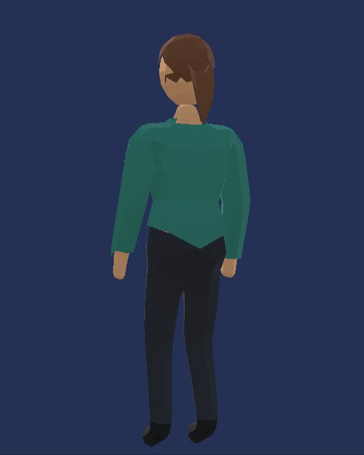

Casual
Cap, mustard tee, jeans, white sneakers, watch
The player's supervisor will get a wardrobe: hats, tops, trousers, shoes, badges and extras, each worn or taken off. Phase 1 gives the supervisor a real body. The stack of cubes is gone. The supervisor now uses the students' skinned body and skeleton, as a man or a woman (the player's choice, saved with the career). The supervisor walks with a real walk cycle, holds a hand out when acting on a student, wears the bought shirt colour, and wears the badge on the front of the chest. Phase 2 gives the wardrobe its eight slots and puts a Wardrobe in the store: a live 3D figure of your own supervisor, a Man / Woman toggle, category tabs, try-on before buying, and Buy → Wear → Take off on every item. Phase 3 puts 36 items in the game: hats, tops, trousers, shoes, pins and school crests, glasses, a lanyard and a watch, each with a price, an unlock and a shop tile, plus a hair choice for both bodies. Phase 4 balances the prices and unlocks.
Play mode on a phone (1080 × 2340) in two schools' rooms, with the Bronze badge on and the issued teal shirt. Standing beside the supervisor's desk when the room opens, and mid-walk a moment after a tap. When standing, the supervisor faces the camera, turned slightly toward the room's centre, so the face and the badge show.


20 frames a second of game time while the supervisor crosses the front of the room at full speed:
first the man, then the woman. The left clip uses the game's camera angle, closer in. The right clip shows the
supervisor side-on. The walk is the students' own walk clip from candidate.glb; no new clip was
made. Its speed follows the supervisor's actual speed, so the planted foot stays put on the floor. The blend
from standing to walking follows the speed too, so starting and stopping are gradual. A footstep sound plays
each time a foot lands.


Walk speed lowered from 3.2 to 2.1 m/s (brisk walk), the user's choice. 3.2 m/s is a jog: a walk would have to play at 2.3× its speed and would look like scurrying. At 2.1 m/s the clip plays at 1.5×. The clip's planted foot travels 1.40 m/s at normal speed, measured from the clip. The balance bots now walk at 2.1 m/s too. Their twelve careful test careers were re-recorded: median final coins went from 1017 to 1010, median reputation from 70 to 68.5, and none was dismissed.
The same figure the room uses, built on its own: as issued (teal shirt, no badge), and with the Navy Shirt and the Bronze Badge. The badge is a small disc on the chest bone, over the wearer's left chest, placed against the front of each body's shirt. It moves with the chest. Before, it was a cube that floated behind the supervisor's back.


The students' body file, parts file and prefab are untouched. The supervisor uses them read-only and has its own material. In the Maple room the same class is seated before and after the change: the students are identical, and only the supervisor differs. In the National room the class draw depends on the frame count, so different people are seated, but they are drawn the same way. A test builds both supervisors and checks that every student renderer's colour and material is unchanged.


The store's "Appearance" section is now the Wardrobe. Play mode at a phone's portrait size (1080 × 2340), dark theme, with the Navy Shirt and the Bronze Badge owned, the badge worn, and 160 coins.


The phone found four preview bugs; they are fixed in 7ea7da3. The re-check on the phone is still
pending. On the Galaxy A15 (build 6ac9729) the preview logged render errors twice a frame from the
first Wardrobe visit until the app was closed. The back of the figure was striped with a skin band at the waist,
try-on left the figure in the issued green, and turning stuck after a drag or two.
One cause. The preview's texture asked for 2× anti-aliasing while the phone's render pipeline has it off. Every opaque and transparent pass of the preview failed ("Attachment 0 was created with 1 samples but 2 samples were requested"). With the passes went the depth test, so the body's skin and trousers drew over the shirt. The picture also stopped updating, so try-ons and turns happened but never reached the screen. The texture is now single-sampled, the camera does not ask for anti-aliasing, and it stops the moment you leave the store. The Mac editor never showed the bug, so the "after" pictures below are from the editor until the phone confirms them.
Also: unowned tiles are clearly marked, the Issued Shirt has its hanger render, and the drag decides turn-or-scroll from the whole movement since the touch began.




Hat, top, trousers, shoes, badge, glasses, neck (lanyard or tie) and wrist (watch). One item each, owned items only. Every slot can be emptied except the top: taking a top off puts the issued shirt back on. Saves move from version 3 to 4; the old "shirt" becomes the top, so nothing worn or owned is lost.
The same figure as the room, on its own layer far below the room, filmed by its own camera into a 512 × 640 texture with a depth buffer and one sample per pixel, the same as the game's own render targets (about 2.6 MB). Its two lights are on only while that camera renders, and the room's lights are off for that moment, so neither lights the other. It renders only while the card is on screen. When you leave the store the camera stops in the same frame and the stage is destroyed, texture and all.
Hats, glasses, the lanyard and the watch hang from their bone (head, face, chest, left wrist). Phase 3 filled every slot: see below.
Trying on never touches the save. Nothing in the simulation reads what is worn or which body was chosen (tested).
Phase 1's two loose ends are fixed. The room now frames the supervisor at the body's full width with its hands (0.45 m each side, not the 0.35 m footprint), so the whole figure is on screen at the start in every school on 19.5:9, 20:9 and 21:9 phones and 4:3 and 16:10 tablets, checked vertex by vertex through the real camera. In Maple on a phone the right hand is now at 92% of the width. And the body turns before it walks: from rest, it no longer walks sideways while the turn catches up.
All 36 approved items are in the game, worn by both the man and the woman, each with its price, its unlock and a baked shop tile. Every picture below is the game itself (the store's live preview and the store in play mode), not a Blender render.
5 hats, 9 tops, 3 trousers, 4 shoes, 3 pins, 8 school crests and 4 extras. Prices are one value inside each band from the candidates page, all in one table for the phase 4 balance pass.
The Graduation Cap, the Blazer and the Gold Pin wait for Senior Supervisor (band 3), the Silver Pin for Supervisor (band 2). A band once reached stays reached, even after a demotion. A school's crest goes on sale once you have worked there. Locked tiles say why and can still be tried on.
A free choice for each body, next to Man / Woman. The woman now starts with long hair; she can pick a bob or a new bun. The man keeps his short hair, or picks cropped or curly.
The badge is a 3.4 cm pin or a school crest, placed on whichever top is worn (16 measured poses; over the blazer it sits on the lapel). The silver is brighter.
Play mode at a phone's portrait size (1080 × 2340, the last three at 720 × 1600 with the large text size), dark theme, a new career at Maple with 400 coins.


A free choice for each body, saved per body. Under a hat the bun is let down into a ponytail: it sits on the crown, where every hat is.


The live preview, front and back, man and woman, wearing the items through the save as a player would.
Cap, mustard tee, jeans, white sneakers, watch


Cardigan, chinos, boots, round glasses, lanyard; her hair in a bun


Shirt & tie, formal trousers, loafers, square glasses, Silver Pin; her hair a bob


Blazer, round glasses, Kingsley crest, loafers, watch


Graduation cap, blazer, Gold Pin, loafers


Beanie, hoodie, jeans, running shoes
Each item alone on the issued look: man, woman, and its shop tile.


hat_cap


hat_beanie


hat_flatcap


hat_bucket


hat_grad


top_tee_white


top_tee_mustard


top_tee_brick


top_polo


top_sweater


top_hoodie


top_shirt_tie


top_cardigan


top_blazer


trousers_jeans


trousers_chinos


trousers_formal


shoes_sneakers


shoes_runners


shoes_loafers


shoes_boots
badge_bronze
badge_silver
badge_gold


crest_maple


crest_riverside


crest_vocational


crest_standard


crest_brightpath


crest_elite


crest_state-university


crest_national


glasses_round


glasses_square


neck_lanyard


wrist_watch


Top_LongSleeve_FThin light slits at the shoulder and at the sides of the waist.


No slits, same shape and weights.
Cause. To shape her bust, build_female.py subdivides the chest of the male
body once. The faces inside that patch gain a vertex in the middle of each edge; the face across the patch's border
keeps its plain edge. The body is flat-shaded, so the tops are cut from it and welded by position, and a vertex in
the middle of an edge has nothing to weld to. The gap is invisible until the vertex moves (the bust) and the shell
is pushed out along its normals. Then it opens into a slit. There are exactly 12 of these on each female top (short-sleeve, hoodie, long-sleeve) and none on the male tops.
Fix. When the shell is cut, each such edge is split at the middle vertex and welded (fix_tjunctions, a
few lines in build_parts.shell). It also fixes the female students, who wear the same parts. It is in the game: 12 T-junctions closed on each of her three tops (a test checks the shipped meshes have none).
| Item | Slot | Price | Unlock | Id |
|---|---|---|---|---|
| Baseball Cap | Hat | 140 ¢ | — | hat_cap |
| Beanie | Hat | 120 ¢ | — | hat_beanie |
| Flat Cap | Hat | 200 ¢ | — | hat_flatcap |
| Bucket Hat | Hat | 160 ¢ | — | hat_bucket |
| Graduation Cap | Hat | 500 ¢ | Reach Senior Supervisor (band 3) | hat_grad |
| White T-Shirt | Top | 90 ¢ | — | top_tee_white |
| Mustard T-Shirt | Top | 90 ¢ | — | top_tee_mustard |
| Brick T-Shirt | Top | 90 ¢ | — | top_tee_brick |
| Polo Shirt | Top | 160 ¢ | — | top_polo |
| Sweater | Top | 190 ¢ | — | top_sweater |
| Hoodie | Top | 210 ¢ | — | top_hoodie |
| Shirt & Tie | Top | 250 ¢ | — | top_shirt_tie |
| Cardigan | Top | 260 ¢ | — | top_cardigan |
| Blazer | Top | 500 ¢ | Reach Senior Supervisor (band 3) | top_blazer |
| Jeans | Trousers | 120 ¢ | — | trousers_jeans |
| Chinos | Trousers | 140 ¢ | — | trousers_chinos |
| Formal Trousers | Trousers | 210 ¢ | — | trousers_formal |
| White Sneakers | Shoes | 140 ¢ | — | shoes_sneakers |
| Running Shoes | Shoes | 190 ¢ | — | shoes_runners |
| Loafers | Shoes | 210 ¢ | — | shoes_loafers |
| Boots | Shoes | 260 ¢ | — | shoes_boots |
| Bronze Pin | Badge | 120 ¢ | — | badge_bronze |
| Silver Pin | Badge | 250 ¢ | Reach Supervisor (band 2) | badge_silver |
| Gold Pin | Badge | 500 ¢ | Reach Senior Supervisor (band 3) | badge_gold |
| Maple Crest | Badge | 150 ¢ | Work at Maple | crest_maple |
| Riverside Crest | Badge | 150 ¢ | Work at Riverside | crest_riverside |
| Eastgate Crest | Badge | 150 ¢ | Work at Eastgate | crest_vocational |
| City High Crest | Badge | 300 ¢ | Work at City High | crest_standard |
| Brightpath Crest | Badge | 300 ¢ | Work at Brightpath | crest_brightpath |
| Kingsley Crest | Badge | 500 ¢ | Work at Kingsley | crest_elite |
| State University Crest | Badge | 500 ¢ | Work at State University | crest_state-university |
| National Centre Crest | Badge | 500 ¢ | Work at the National Centre | crest_national |
| Round Glasses | Extras | 140 ¢ | — | glasses_round |
| Square Glasses | Extras | 140 ¢ | — | glasses_square |
| ID Lanyard | Extras | 90 ¢ | — | neck_lanyard |
| Wristwatch | Extras | 230 ¢ | — | wrist_watch |
Seven items are colours only (the T-shirts, the hoodie, the trousers). Five tops for each body, three shoe shells, five hats, two glasses, a watch, a lanyard for each body, the pin and eight crests: about 12,000 triangles in all, in one 1.7 MB file the supervisor holds. Every piece is tinted by role on one white material.
New items are bought, never drawn as rewards, so the reward stream and every balance measurement are unchanged. Nothing in the simulation reads what is worn, the body or the hair.
Version 5 records the schools a career has worked at; an older career is seeded from its past rooms, its accepted offers and notices, and its current school. Hair needs no migration.
SupervisorFigure.Build(prefab, appearance, parent) makes a
dressed figure anywhere, from a SupervisorAppearance (body, hair and every wardrobe slot).
The room and the store's live preview both use it.
Saved in the career as SupervisorBody, Male by default. Older
saves load as Male. It is only a look: the simulation never reads it. The Wardrobe's toggle changes it at any
time, free.
Standing, Walking and PresentDocument (the reach), from the students' file. They are mixed by speed on a hand-driven graph, with no per-frame allocation.
One skinned body, a skinned part per garment worn (at most about seven), a small pin and one material.